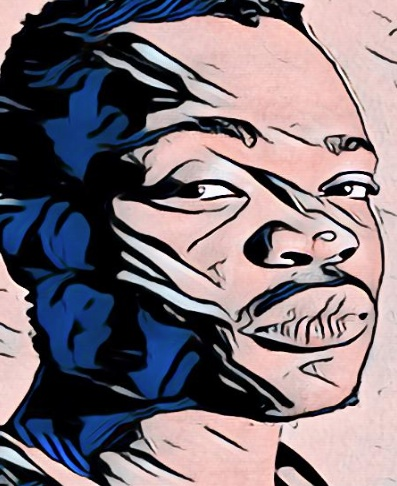
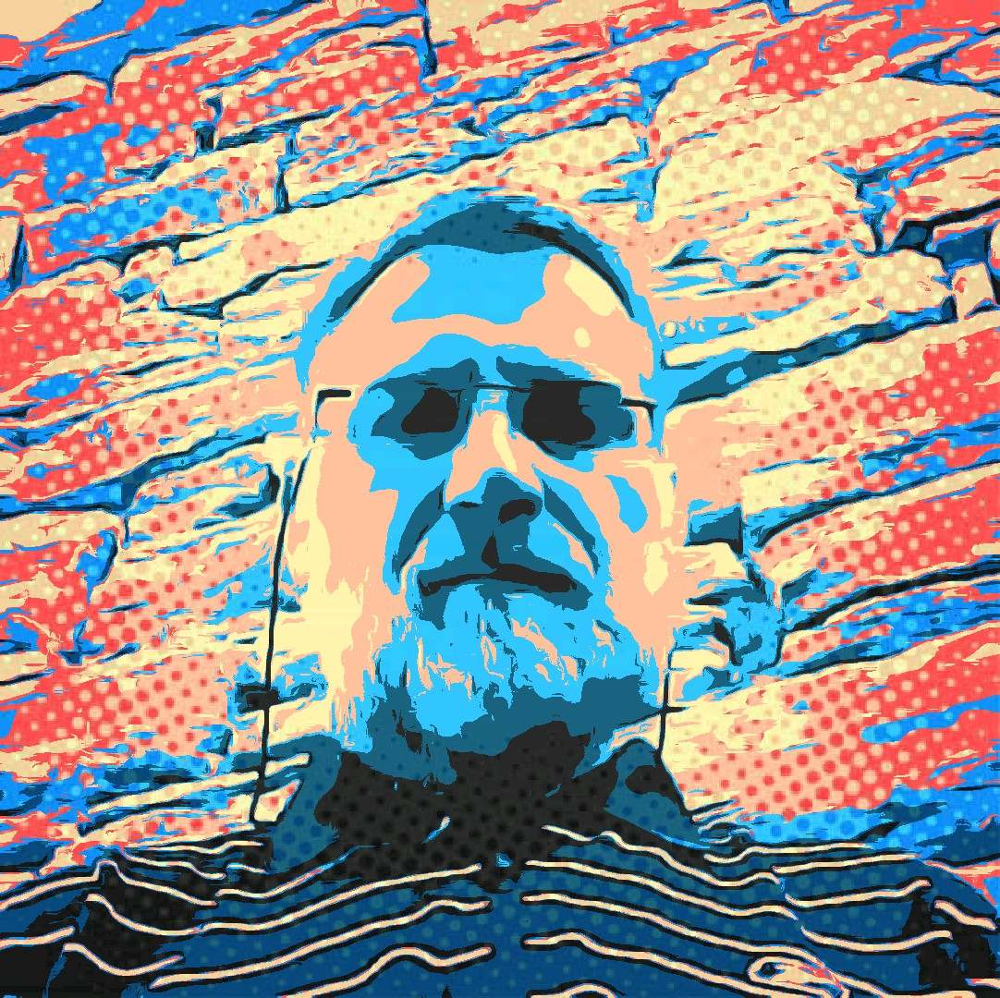

*** * * * * * * * * * * * * ***
| TEAM MEMBERS | |
|---|---|
|

Mr. Albert R. Mantu Marketing |
 Mr. M.D. Pienaar BRek (Hon), MPhil (Philosophy) Owner/Founder. General Management LinkedIn Profile |
During 2018 more than 500 South African voters from varied backgrounds and "races" signed the Deed of Foundation of Federal Party SA - FPSA, a new political party in South Africa.